Mistake 1
Betting everything on one place
Pret lived on city-centre office footfall. When COVID emptied city centres, the whole model wobbled.
- ~60%drop in sales
- ~2,900jobs cut
£343mloss
£226mloss, the year after
Brand-futures case study, 2026
Where does a bakery built for everyone go when the everyday itself changes? I researched Greggs, wrote a strategy for 2050 and built the brand world with AI.
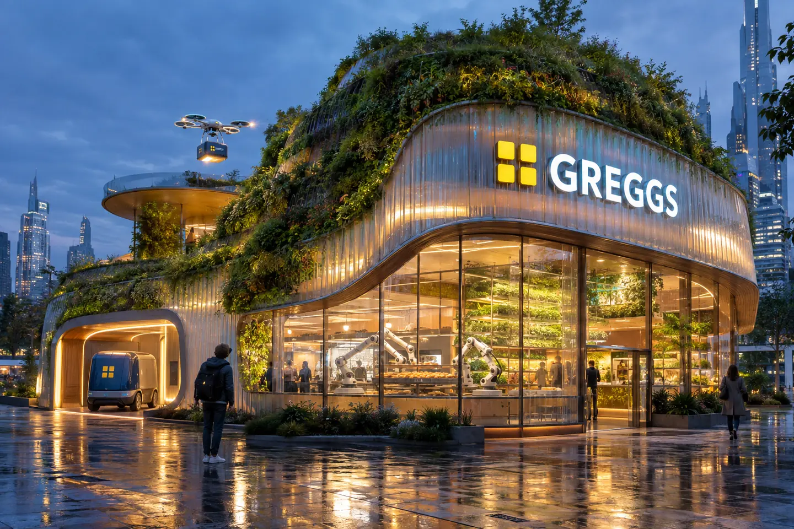
The problem
Greggs is already everywhere in Britain. Growth from more of the same is slowing, and weight-loss drugs are changing what people want to eat.
Greggs plc FY2025 results and H1 2026 trading update, as cited in my report.
How does a cheap bakery stay cheap for 25 more years?
Greggs today
It competes as an everyday habit, not as a café. Its real strength is breadth: it isn't tied to one city, one class or one time of day.
CommutersWorkersFamiliesStudentsJust Eat & Uber Eats
The menu is already moving towards health. The 2050 plan extends that line. It doesn't replace it.
Competitor landscape
The rivalry is so sharp that researchers used it to study inequality. A Sheffield Hallam model sorted English towns into "Greggs" or "Pret" from shop locations alone, and the line it drew followed household income.
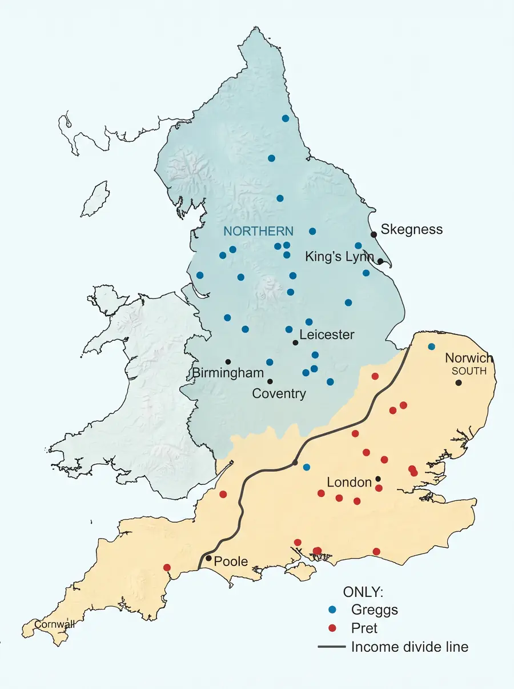
Newcastle, 1939
Hampstead, 1984
Affordable
Premium
National, suburban, takeaway-led
273 of its 434 shops in London (Dec 2022)
Everyone, everywhere
The affluent few, in one city
Held up
Sales fell by up to ~60%
Belonging
Status
The lessons
Both came from leaning on one thing too hard. Pret's own recovery now copies Greggs: suburbs, market towns, airports.
Mistake 1
Pret lived on city-centre office footfall. When COVID emptied city centres, the whole model wobbled.
Mistake 2
The coffee subscription launched at £20 a month, went up to £30, then in 2024 was cut back and lost its food discount. People noticed.
Concentration is the enemy.
Greggs' answer is built into the business, not bolted on. Low prices are protected by cross-subsidy, not by discounts that can be pulled. Its spread is the opposite of depending on one place. In 2050 a network of micro-bakeries pushes that spread further, so no single city, channel or shock can sink it.
Future market trends
Every 2050 idea starts from a real signal today. The left column is fact. The right column is my projection.
Net Zero by 2040 is a live pledge
Low-waste local baking you can see
Just Eat and Uber Eats today
Drone drop, "oven-fresh to your door", as a paid premium tier
GLP-1 users skip savouries. Greggs answers with salads, the Chicken Roll and matcha
Affordable also means protein-forward and plant-rich
Greggs Express self-service is on trial with a franchise partner
AI runs forecasting, kitchens and micro-bakeries baking to local demand
It redrew the high street, hurting Pret and helping Greggs
Food follows people into suburbs, homes and transit
The core idea
It's the Costco hot-dog trick. The hero price stays put, funded by higher-margin arms around it. Because it's built into how the business makes money, it can't be quietly withdrawn like a discount.
Four formats, one system underneath: a micro-bakery line, a drone centre, a local grow node, and a way to go abroad.
Mission for 2050
To keep great food within everyone's reach, fresh, fast and fairly priced, wherever and however people live in 2050.
Same rhythm as today's line. It adds fairness, on health and on price, and permanence. Everything here extends the brand. Nothing reinvents it.
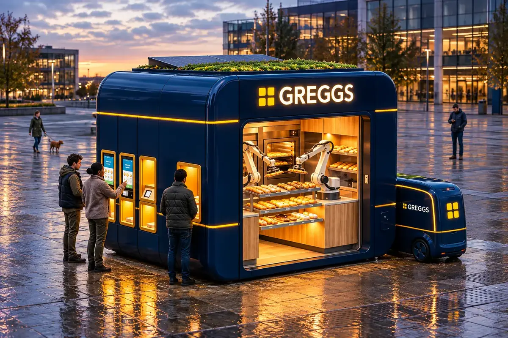
The visual deck
I made these with Gemini and Google Flow from one written brand spec. Captions are from the deck.
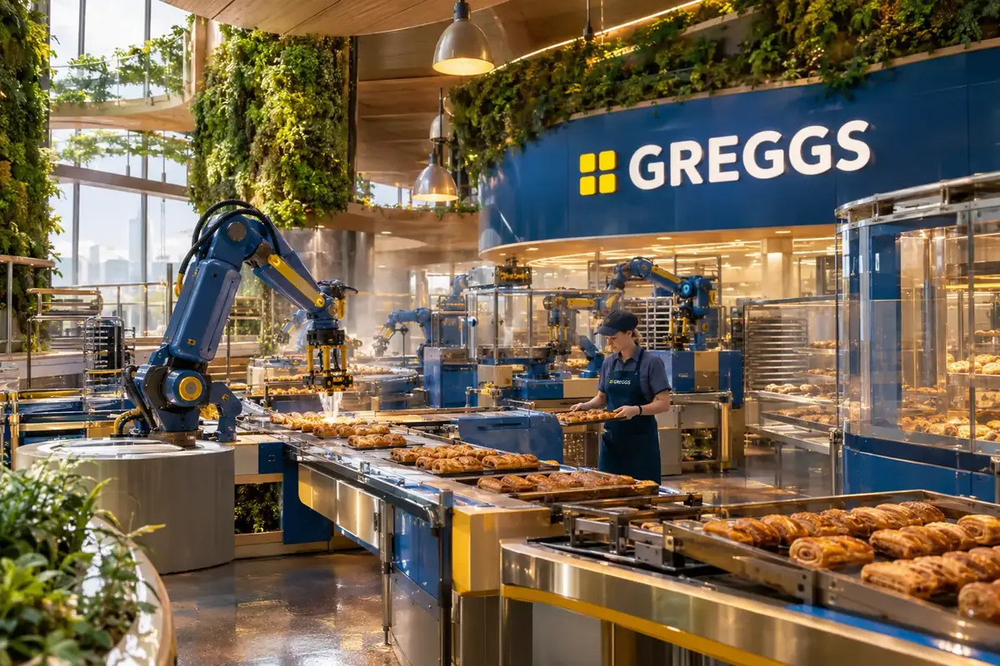
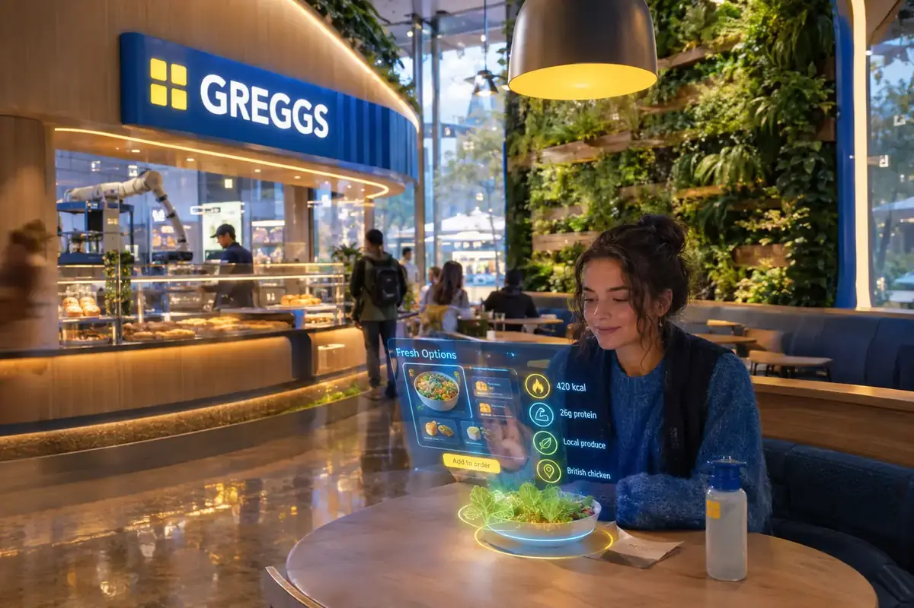
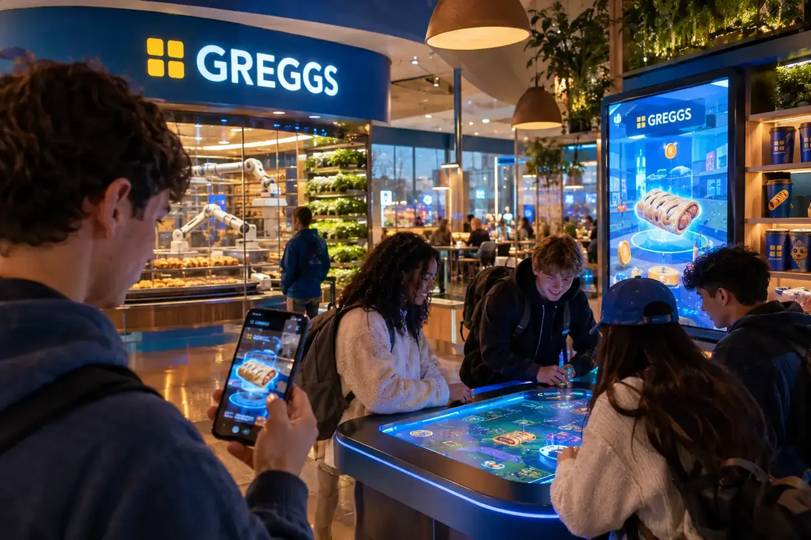
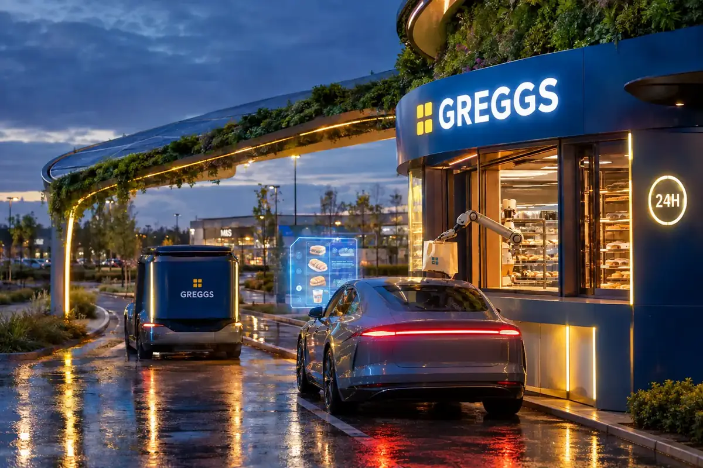
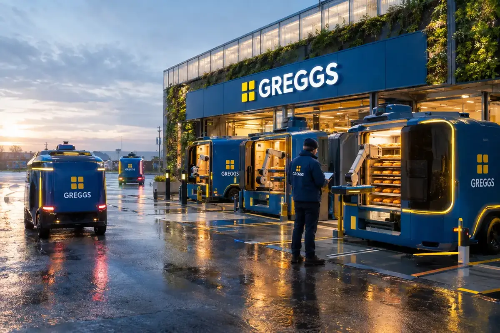
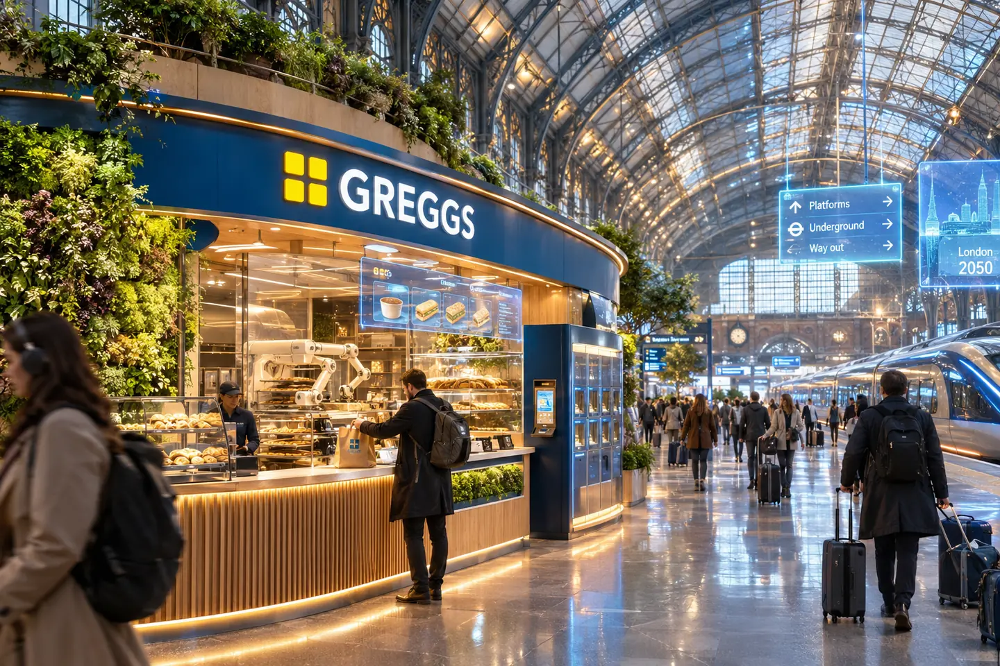
Marketing strategy
Greggs doesn't chase luxury. It makes "for everyone" look like the smartest, kindest choice. Moments matter more than media money.
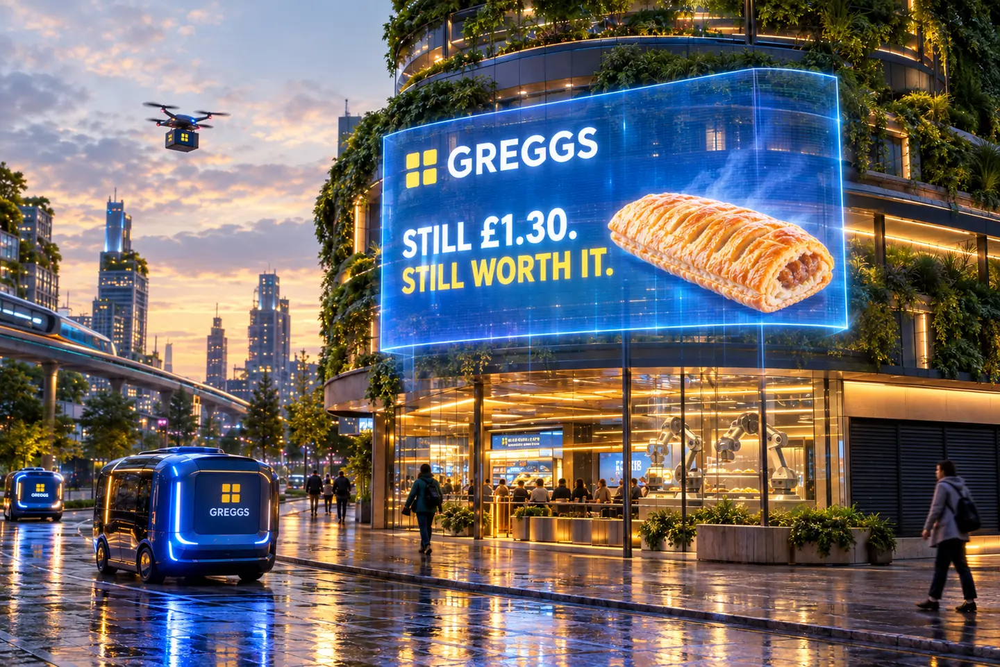
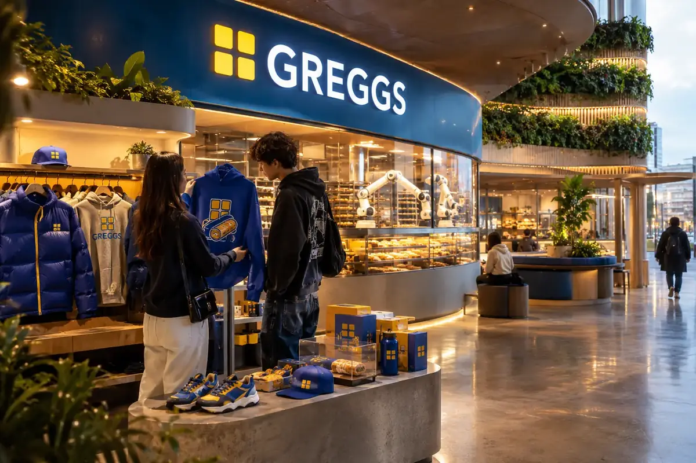
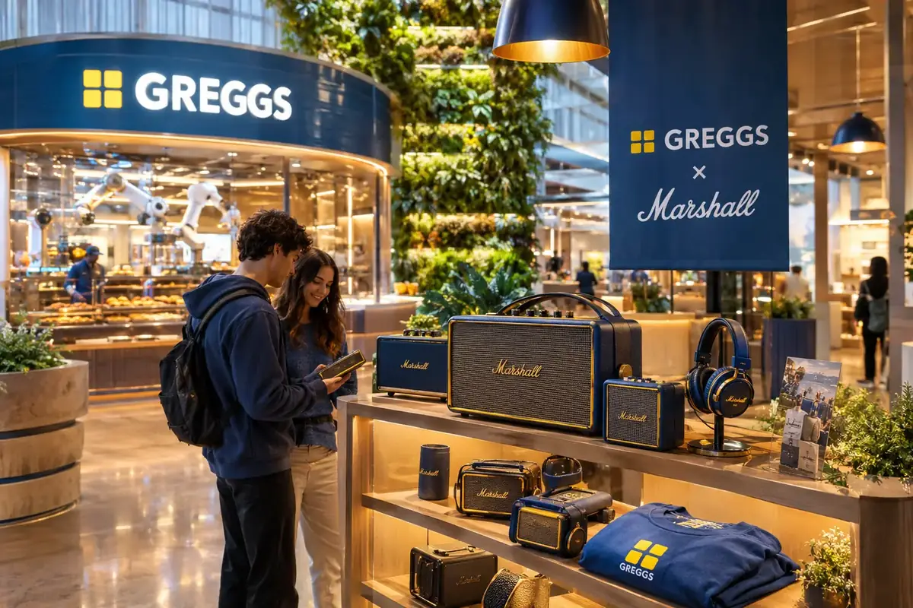
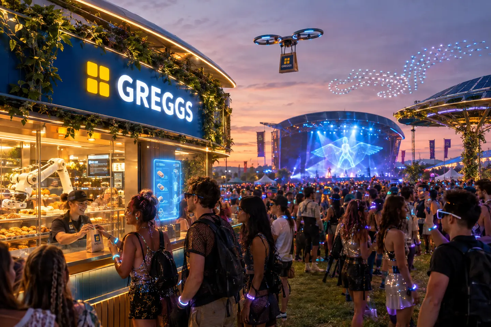
Audience and positioning
Everyone who wants good food without paying a premium. Positioning line: the everyday bakery, everywhere, forever.
Going global, staying local
How far do you localise before it stops being Greggs? My answer: fix one global hero and let everything around it adapt.
Fixed global hero+Flexible local range=Recognisable everywhere
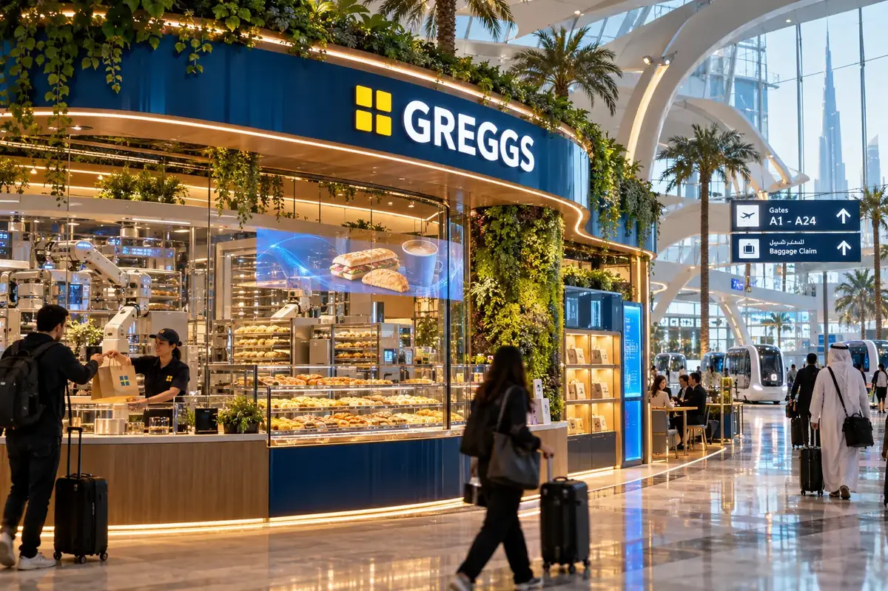
Visual language
Keep the blue, the yellow and the plain speaking, and carry them forward with space and restraint, not chrome. The future Greggs should feel like one you already know.
#00558FYellow#EAB61ECream#FAF5E9Fresh only#3C7D44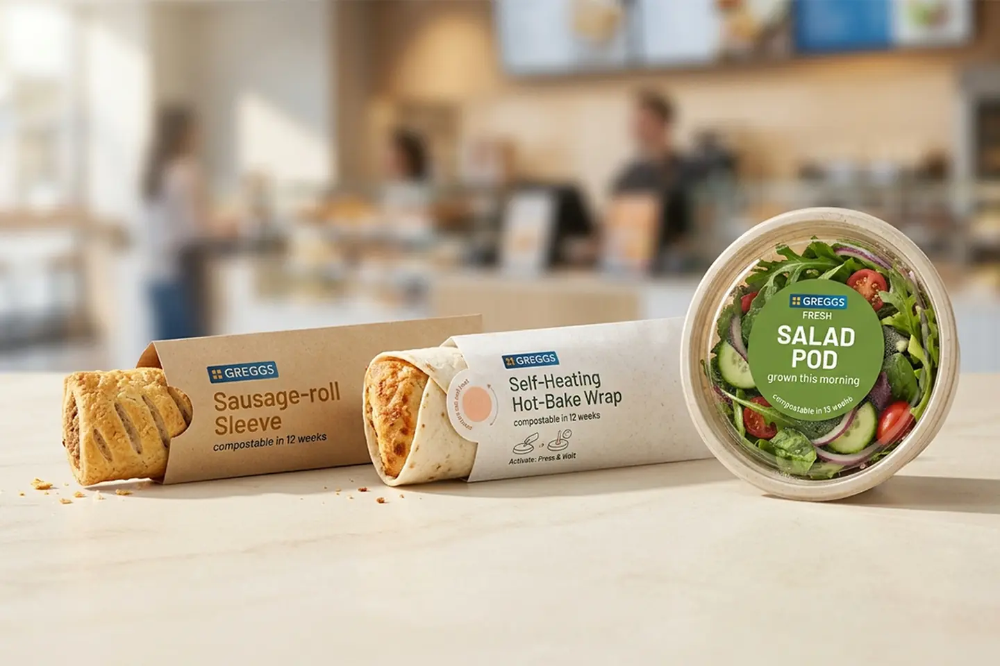
How I used AI
I wrote the brand spec down before generating anything, which kept 60+ images, films and sounds looking like one brand. I checked every output and fixed what the AI got wrong, like a broken logo. Strategy and decisions stayed with me.
Method
Present-day figures come from company reporting and public sources (FY2025 and H1 2026). The cross-subsidy model, the four formats and the micro-bakery are my own frameworks, built on real Greggs initiatives. Every 2050 image is AI concept work.
FactA present-day claim about Greggs or its market, sourced in the report.
ProjectionA 2050 idea argued from those facts. A forecast, not a statement of fact.